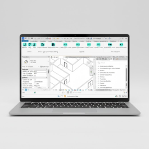
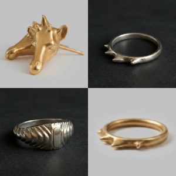
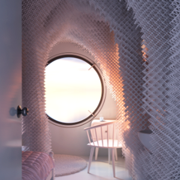
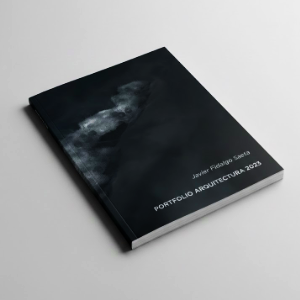
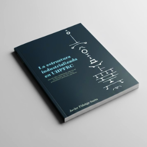
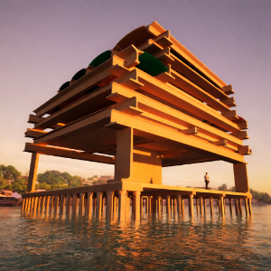
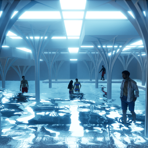

Sobre mí
Soy un arquitecto afincado en Madrid con un fuerte interés en la intersección entre diseño y tecnología. Estoy especializado en estrategias y herramientas BIM para el sector de la edificación. Mi entorno habitual de trabajo es el ecosistema de Autodesk: Revit para el desarrollo de los proyectos y Forma para su gestión en un entorno común de datos. Siempre he recurrido a la programación gráfica (Revit-Dynamo, Rhino-Grasshopper) y al scripting (pyRevit) para automatizar tareas y desarrollar mis propias herramientas, pero los agentes de IA han cambiado la escala de lo posible: hoy desarrollo add-ins completos para Revit, principalmente en C# y con Claude Code. Creo que la digitalización y la IA van a transformar de forma radical el sector en los próximos años, y tengo el compromiso de seguir aprendiendo para formar parte de ese cambio.
Actualmente, trabajo en el departamento BIM de la Corporación Vía Ágora (promotora, constructora y fabricante de componentes industrializados), donde velamos por la eficiencia y la estandarización en el desarrollo de proyectos residenciales. En paralelo, colaboro con Mercor, la plataforma de expertos con la que trabajan las grandes compañías de IA, entrenando y evaluando sus agentes.
Anteriormente, he tenido la suerte de trabajar en contextos y escalas muy diferentes, desde grandes desarrollos futuristas en Oriente Medio hasta proyectos de rehabilitación de patrimonio para la Administración pública en España. En todos ellos he buscado poner la tecnología al servicio de la arquitectura, profundizando en el diseño sostenible basado en datos, la prefabricación y la fabricación digital, o la materialización constructiva de geometrías complejas.
En mi tiempo libre me gusta aplicar mis habilidades en pequeños proyectos personales, además de pasar tiempo con mis seres queridos, aprender sobre historia, y desconectar en la pista de pádel.
Experiencia
2026 — actualidad
Especialista BIM · Vía Ágora
Desarrollo de add-ins para Revit en C# con la asistencia de agentes de IA, para automatizar procesos, asegurar la trazabilidad y la estandarización de los componentes BIM y recopilar y tratar de forma fiable los datos de los proyectos residenciales de la corporación. Definición de flujos de trabajo, protocolos y estándares BIM en Revit, incluida la biblioteca propia de familias. Coordinación de los proyectos en Autodesk Forma como entorno común de datos e integración BIM de los componentes industrializados que fabrica el grupo.
C# + Revit
Claude Code
Agentes de IA
Revit
Forma
2026 — actualidad
Experto generalista para entrenamientos de IA · Mercor
Participación en el fine-tuning de modelos de IA de los principales laboratorios del sector, mediante la evaluación de trabajos elaborados por los agentes en diversos ámbitos de especialización.
Agentes de IA
Entrenamiento de IA
2024 — 2026
Arquitecto BIM · Grupo Tragsa
Modelado, coordinación de disciplinas y desarrollo de herramientas en diversos proyectos de arquitectura con metodología BIM para la Administración pública, desde fases conceptuales hasta el proyecto de ejecución, incluso apoyo en fase de obra. Especialización en edificación de nueva planta para bases de bomberos forestales, así como en proyectos de rehabilitación de oficinas administrativas.
Revit
Dynamo
pyRevit
C# + Revit
Rhino
Grasshopper
Python
2023 — 2024
Arquitecto BIM Junior · Labit Group
Participación en diversos proyectos singulares de arquitectura y urbanismo en entornos BIM, especialmente en fases iniciales de diseño para grandes desarrollos en Oriente Medio. Análisis y diseño mediante datos. Modelado de geometrías complejas mediante métodos paramétricos y SubD.
Revit
Dynamo
pyRevit
Rhino
SubD
Grasshopper
Python
2019 — 2021
Arquitecto en prácticas · The Lab
Prácticas en el estudio del profesor Enrique Martínez Sierra, especializado en patrimonio construido y estructuras. Participación en proyectos de rehabilitación en conjuntos históricos y residenciales. Elaboración de presupuestos, inspecciones técnicas de edificios (ITE) e informes periciales.
AutoCAD
CYPECAD
Presto
Rhino
Grasshopper
Educación
2026 — en curso
Formación en agentes de IA · Mercor / Claude Academy
Formación y práctica continua para el trabajo colaborativo con agentes de IA. El objetivo es mantenerse al día en una tecnología que avanza a gran velocidad, algo posible gracias a recursos formativos como el curso de introducción a los agentes de Mercor o los diversos cursos de Anthropic en Claude Academy.
Certificado Introduction to Agents - Mercor
Insignia Claude 101 - Claude Academy
Insignia Introduction to Claude Cowork - Claude Academy
Insignia Claude Code 101 - Claude Academy
Insignia Claude Code in action - Claude Academy
Insignia AI Fluency: Framework and foundations - Claude Academy
Insignia AI capabilities and limitations - Claude Academy
Insignia AI Fluency for builders - Claude Academy
Agentes de IA
Claude
Claude Code
2026
Curso de C# para Revit · butic The New School
Curso oficial de Autodesk de desarrollo sobre la API de Revit con C#, con una duración de 30 horas e impartido por José María Jiménez de Lope. Desarrollo de scripts para la automatización de tareas y mejora de flujos de trabajo mediante C#, que permite la creación de add-ins propios para Revit.
Revit
C#
C# + Revit
2025
Curso de pyRevit · butic The New School
Curso oficial de Autodesk de desarrollo sobre la API de Revit con Python, con una duración de 30 horas e impartido por Carlos Romero Carballo. Desarrollo de scripts para la automatización de tareas y mejora de flujos de trabajo mediante pyRevit, que permite la creación de barras de herramientas personalizadas.
Revit
Python
pyRevit
2025
Curso de Revit Avanzado · BIMLEARNING
Curso oficial de Autodesk de Revit Avanzado, con una duración de 45 horas e impartido por Jose Manuel Zaragoza. Dominio de las capacidades para establecer estrategias BIM, crear familias, parámetros, tablas, organización y planteamiento BIM del proyecto, uso de masas, geometrías complejas y utilización de las herramientas más allá de su conocimiento básico en proyectos de alta complejidad.
Revit
2022 — 2023
Máster Habilitante en Arquitectura · ETSAM-UPM
Máster universitario que habilita para el ejercicio de la profesión regulada de arquitecto en la Unión Europea, impartido en la Escuela Técnica Superior de Arquitectura de Madrid, perteneciente a la Universidad Politécnica de Madrid.
2015 — 2022
Grado Universitario en Arquitectura · ETSAM-UPM
Grado universitario en fundamentos de la arquitectura, impartido en la Escuela Técnica Superior de Arquitectura de Madrid, perteneciente a la Universidad Politécnica de Madrid. Programa Erasmus+ en la Universidad de Arquitectura, Ingeniería Civil y Geodesia (UACEG) de Sofía, Bulgaria, durante el curso 2019-2020.
2022 — 2025
Curso de Egiptología · UAB
Curso de Egiptología de la Universidad Autónoma de Barcelona, con una duración de más de 50 horas e impartido por Josep Cervelló y José Lull, profesores agregados de Ciencias de la Antigüedad y la Edad Media.
Proyectos
2025

Barra de herramientas personalizadas para Revit con pyRevit
Desarrollo de herramientas JFS para facilitar y agilizar tareas en Revit, mediante scripts de Python a través del plugin pyRevit. Esta barra personalizada incluye botones de exportación e importación de datos de texto con Excel, automatizaciones en la documentación de leyendas, y análisis para la evacuación de incendios.
Revit
Python
pyRevit
2024

Diseño de anillos y pendientes
Diseño de anillos y pendientes utilizando herramientas de modelado de Rhino-SubD-Grasshopper. Impresión 3D de los prototipos en resina y posterior encargo para impresión 3D en metales preciosos.
Rhino
SubD
Grasshopper
Kangaroo 2
2023

Propuesta para el Nakagin Capsule Challenge
Concurso organizado por Gediminas Kirdeikis, en el que debemos reimaginar el interior de una de las cápsulas de la Torre Nakagin, de Kisho Kurokawa. Obtención del segundo premio con una propuesta orgánico-computacional.
Ganadores del Nakagin Capsule Challenge
Propuesta para el Nakagin Capsule Challenge
Script para optimización topológica y población de voxels
Rhino
Grasshopper
Python
V-Ray
Photoshop
2023

Portfolio arquitectura 2023
Portfolio de arquitectura con una selección de proyectos académicos y personales realizados durante mi etapa universitaria.
InDesign
2023
Trabajo Fin de Máster en Arquitectura · ETSAM-UPM
Titulado "campos alíseos, la comuna autosuficiente de Punta de Anaga", este proyecto plantea un modo de vida alternativo y alisio-dependiente, camuflado en la atmósfera nebulosa de las remotas montañas del macizo de Anaga, en la isla de Tenerife. Obtención de calificación sobresaliente y proyecto finalista de los Premios Airzone 2023.
Láminas 00-03 del proyecto
Láminas 04-07 del proyecto
Láminas 08-11 del proyecto
Láminas 12-14 del proyecto
Memoria técnica del proyecto
Vídeo presentación del proyecto
Script para optimización topológica y población de voxels
Rhino
Grasshopper
Python
V-Ray
Photoshop
2022

Trabajo Fin de Grado en Arquitectura · ETSAM-UPM
Titulado "La estructura industrializada en UHPFRC: estudio del prefabricado estructural en hormigón de ultra altas prestaciones reforzado con fibras", este trabajo explora los diseños de componentes estructurales prefabricados en UHPFRC, con especial atención a su sección, comparándola con la de los elementos industrializados en materiales estructurales convencionales.
Trabajo Fin de Grado: La estructura industrializada en UHPFRC 1/3
Trabajo Fin de Grado: La estructura industrializada en UHPFRC 2/3
Trabajo Fin de Grado: La estructura industrializada en UHPFRC 3/3
InDesign
2021

Propuesta para los Premios ANDECE VI edición
Concurso para estudiantes organizado por ANDECE, la Asociación Nacional de la Industria del Prefabricado de Hormigón. Obtención del primer premio con la propuesta "Lonja de las Perlas".
Entrega Premios ANDECE VI edición
Panel resumen de la propuesta
Proceso constructivo de la propuesta
Rhino
V-Ray
Twinmotion
Photoshop
2021

Propuesta para el Concurso Centro Acuático en Plaza Gaudí
Concurso internacional para estudiantes de arquitectura organizado por la feria Piscina Barcelona. En su edición 2021 se propone proyectar un centro acuático integrado en la Plaza Gaudí de Barcelona, frente a la Sagrada Familia.
Rhino
V-Ray
Twinmotion
Photoshop